State Council of Educational Research and Training (SCERT), Kerala
2024
Social Science
Part I
Standard VII
Government of Kerala
Department of General Education
Prepared by
ST-351-1-SOC. SCI. (E)-7-VOL-1
Page 1
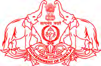
Page 2
Prepared by
State Council of Educational Research and Training (SCERT)
Poojappura, Thiruvananthapuram 695012, Kerala
Website : www.scertkerala.gov.in, e-mail : scertkerala@gmail.com
Typeset and design by : SCERT
Printed at : KBPS, Kakkanad, Kochi-682030
© Department of General Education, Government of Kerala
7
Jana-gana-mana adhinayaka, jaya he
Bharatha-bhagya-vidhata.
Punjab-Sindh-Gujarat-Maratha
Dravida-Utkala-Banga
Vindhya-Himachala-Yamuna-Ganga
Uchchala-Jaladhi-taranga
Tava subha name jage,
Tava subha asisa mage,
Gahe tava jaya gatha.
Jana-gana-mangala-dayaka jaya he
Bharatha-bhagya-vidhata
Jaya he, jaya he, jaya he,
Jaya jaya jaya jaya he!
The National Anthem
India is my country. All Indians are my brothers and sisters.
I love my country, and I am proud of its rich and varied
heritage. I shall always strive to be worthy of it.
I shall give respect to my parents, teachers and all elders and
treat everyone with courtesy.
I pledge my devotion to my country and my people. In their
well-being and prosperity alone lies my happiness.
PLEDGE
Social Science
Page 3

Dear Children,
Social Science is the branch of study that deals with social life and
educational development. It can guide our society forward based on the
past experiences and helps to overcome the difficult circumstances and
contribute effectively to shape new eras and environments. The study of
Social Science helps us to implement the fundamental rights set forth by
the Constitution on a scientific basis and to find possibilities to nurture
the country's economy.
We must have a clear understanding of society to foster an inclusive
mindset taking into consideration all the marginalised social groups and
in preserving the nation's high cultural and secular traditions. A Social
Science student will be able to identify the geographical features and
realise the need to conserve nature and ensure agricultural prosperity.
It is hoped that the textbook of Social Science, Class 7- Part 1, will be
an asset and contribute much to your success in life by incorporating
such progressive perspectives as proposed by the Revised Curriculum
Framework of Kerala, 2023.
This textbook is sure to help you in making our society more dynamic
and upholding human values.
With love and regards,
Dr. Jayaprakash R.K.
Director
SCERT, Kerala
Page 4
Textbook Development Team
Advisor
Dr. K.N. Ganesh
Chairman, Kerala Council for Historical Research
Chairperson
Dr. Baiju K.C.
Vice Chancellor (In-Charge) Central Unitversity, Kasaragod
Anas N.S.
Research Scholar, N.S.S. College Nilamel
M. Johnbai
M.V.H.S.S. Arumanoor, Thiruvananthapuram
Johnson T.Y.
C.S.I.H.S.S. For Deaf, Valakom
Krishnan Kuriya
AEO (Rtd.), Kannur South
Musthafa Mattathoor
Teacher Educator, Govt. Institute of Teacher
Education, Malappuram
T.S. Nisha
S.N.V.U.P.S. Maruthamanpally, Kollam
Jinju Gomez
HSST English
SMV Govt. Model H.S.S., Thiruvananthapuram
Nisha M.S.
P.H.S.S., Mezhuveli, Pathanamthitta
Premjith Sureshbabu
Artist
Priya S.S.
G.B.H.S.S., Mithirmala, Thiruvananthapuram
Rajan P.P.
Trainer, B.R.C., Malappuram
Rajan Kulangara
Irigannur H.S.S., Vadakara, Kozhikode
Saikumar P.
A.M.L.P.S. Kaliyattumukku,
Malappuram
Sreelatha T.M.
HSST Geography
HSS Govt. Jawahar H.S.S., Ayoor, Kollam
Experts
Members
English Translation
Dr. P.P. Abdul Razak
Associate Professor (Rtd.), Department of
History, P.S.M.O. College, Thirurangadi
Dr. Anish V.R.
Assistant Professor, Department of Political
Science, S.A.R.B.T.M. Govt. College, Quilandy
Dr. Anil D.
Research Officer, SCERT Kerala
Academic Coordinator
State Council of Educational Research and Training (SCERT)
Vidhyabhavan, Poojappura, Thiruvananthapuram 695 012
Page 5

1. Medieval India.............................................................................................7-24
2. Medieval India: Cultural Movements......................25-38
3. Constitution: Path and Guiding Light.....................39-53
4. From Injustice to Justice............................................................54-67
5. Our Earth.......................................................................................................68-81
6. Indian Subcontinent.........................................................................82-93
7. From food production to food security.................94-110
Additional Reading:
Not subjected to evaluation
Learning Activities
Let's Read
Extended Activities
Certain icons are used in this
text book for convenience
Content
Page 6
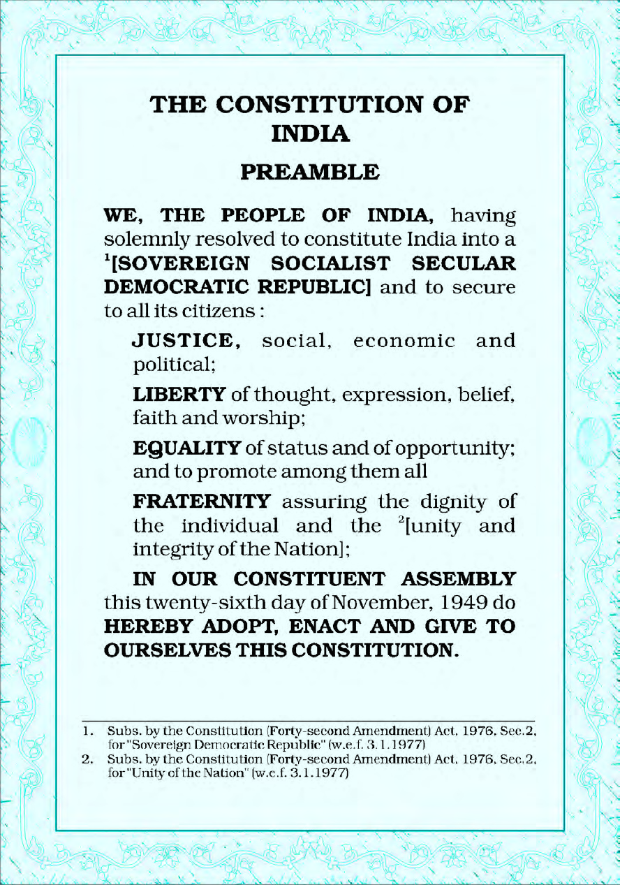
Page 7
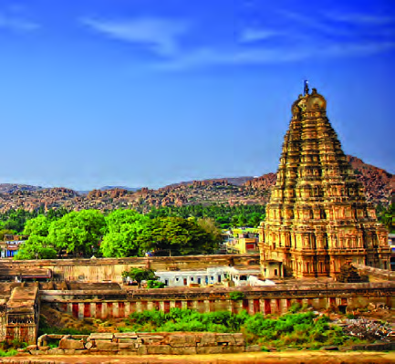
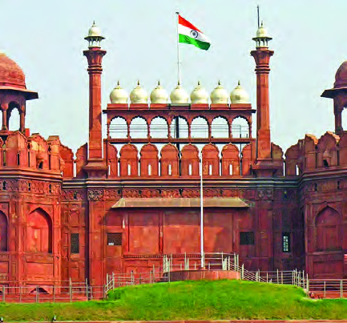
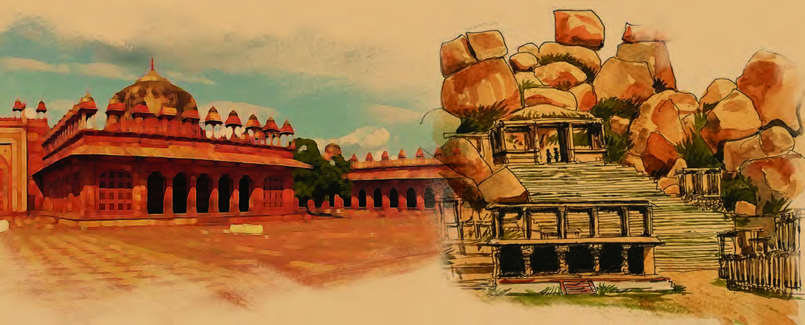
Observe the figures given above. These are the historical relics of two kingdoms
that ruled medieval India.
You may be familiar with the first one.
You might have seen our Prime Minister hoisting the National Flag here on
Independence Day.
The first figure is the Red Fort, built in Delhi during the reign of Mughal emperor
Shah Jahan.
The second is the figure of Hampi, the capital of the Vijayanagara that existed in
South India during the same period.
Let's have a discussion on these two kingdoms in this chapter.
Medieval India
1
Fig. 1.1
Fig. 1.2
Page 8
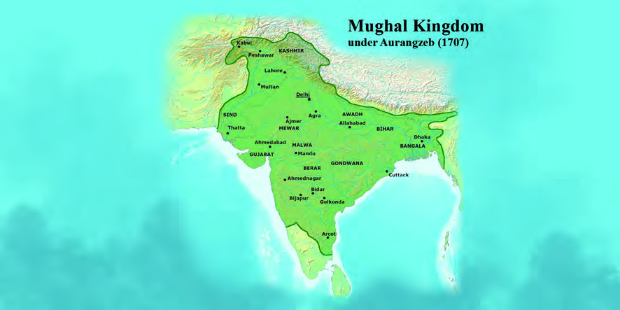
Mughal Rule
Babur established the Mughal rule in 1526. The Mughals ruled India till 1857 with
Delhi as their capital. Do you know the main rulers during the Mughal period?
Mughal Rule
Aurangzeb (1658-1707)
Babur (1526-1530)
Akbar (1556-1605)
Jahangir (1605-1627)
Shahjahan (1628-1658)
Humayun (1530-1540)
(1555-1556)
You may have identified the important Mughal rulers from the picture.
Collect pictures of Mughal kings and prepare an album
The Mughals had a very vast kingdom. In addition to today's India, the Mughal rule
had spread to the neighbouring countries also.
Fig. 1.3
The Mughal Kingdom under Aurangzeb (1707)
- Part 1
8
VII
Social Science
Page 9


Observe the map, find and list out the existing countries where the
Mughals had extended their rule.
l
Afghanistan
l
l
The Mughals and the First Battle of Panipat
The name 'Mughal' is derived from the term 'Mongol'. Babur,
the founder of the Mughal Kingdom, was the descendant of the
Turkish ruler Timur paternal way and the Mongol king Genghis
Khan maternal way. It was the Europeans who started addressing this
dynasty as 'Mughal' during the 16th century.
In 1526, Ibrahim Lodi, the last ruler of the Lodi dynasty, and Babur, the ruler
of Kabul, fought at Panipat in Haryana. In history, this battle is referred as
the First Battle of Panipat. Babur laid the foundation of the Mughal rule in
India through this victory.
''Emperor Akbar, who shook the East, passed away. Akbar was indeed
a great emperor. Even while having great command over his subjects,
they all loved him, respected him and was always submissive to him.
He administered equal justice without any distinction of high-low
castes, familiar-unfamiliar. He considered Hindu/Christian/Muslim alike. He
treated the strong with force and the weak with mercy… He was loved by all..."
This is an obituary written by the Jesuit priest Pierre Jaric after the death of Emperor
Akbar (1605 CE).
What can you understand about the Mughal ruler Akbar from the above note?
l
Akbar was a powerful ruler.
l
l
l
9
Medieval India
Page 10
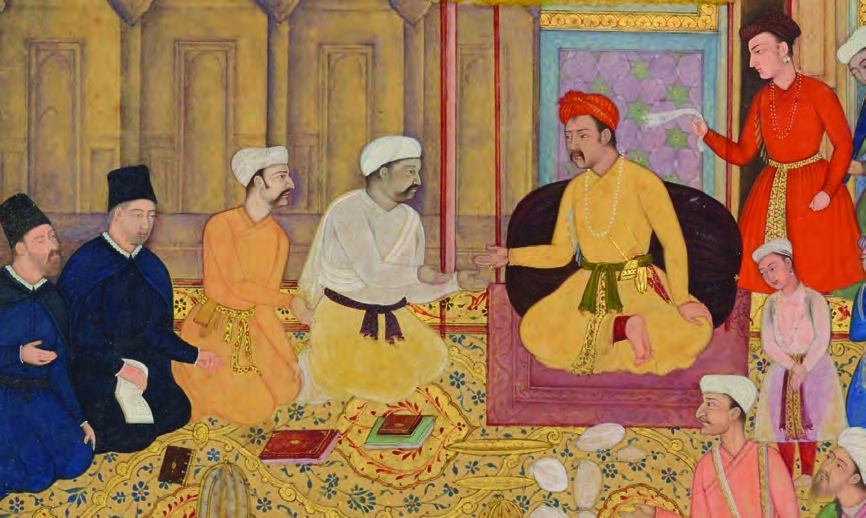
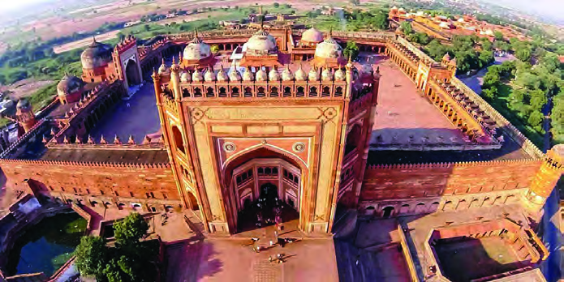
Fig. 1.4
Akbar, the famous ruler of the Mughal dynasty, discusses with various religious leaders.
In 1575, Akbar built Ibadat Khana in his new capital, Fatehpur Sikri. Scholars
and dignitaries of various religions used to gather here. These discussions speak
volumes about Akbar's policy of religious tolerance.
Akbar created Din-i-Ilahi, his visionary religion by combining the good aspects of
all religions. Peace to all or sulh-i-kul is the core of this vision. He aimed to clarify
the idea that all visions are for the welfare of human beings.
Fig. 1.5
Fatehpur Sikri
- Part 1
10
VII
Social Science
Page 11

The abolition of the religious tax called 'Jaziah' proved that Akbar followed
tolerance in the administrative field as well. People from all sects were treated
equally in all spheres of the Mughal rule. Raja Todarmal, Raja Mansingh, Raja
Bhagavandas and Birbal were prominent among those who held high positions in
the royal court of Emperor Akbar.
What was Akbar's aim in building Ibadat Khana?
Make notes.
Mughal Sultan Jahangir recorded in his memoir 'Tusuk-i-Jahangiri'
that Akbar had ordered his followers: “My followers should not
waste time in enmity with other religions. Let the concept of sulh-i-
kul (peace to all) be applied to all belonging to other religions. "Do not kill
animals or take up arms except in times of war"
Based on this statement, how much did Akbar's policies help in
maintaining religious tolerance among different sections of the people?
Organise a class discussion.
The Mughal Army
During the Mughal period, a strong army was needed to expand the kingdom as
well as to maintain the expanded kingdom. 'Mansabdari' was the military system
implemented by Akbar for this purpose. According to this system, each officer
had a regiment under him. The title 'mansab' refers to the number of cavalry
each officer is required to maintain. The rank of the Mansab was determined by
the number of soldiers to be maintained. This system was implemented as an
alternative to maintain army paying directly from the state exchequer. Mansabdars
were allotted land according to their ranks. The Mansabdar maintained his army
by collecting tax from land allotted to them. The support of the Nobles and the
military was necessary to carry forward the regime strongly. Mansabdari system
was implemented to achieve this objective.
11
Medieval India
Page 12
Organise a discussion on Mansabdari system of the Mughals.
The Mughal Administration
Let us see the measures adopted for administrative convenience during the Mughal
period.
Mughal Kingdom
Suba
Sarkar
Pargana
Grama
It was during Akbar's regime in Mughal rule that such an administrative order
(structure) was effectively formed.
The emperor was the sovereign authority of the country, the commander-in-chief,
the law-maker and the supreme judge.
During the Mughal period, there were no separate courts for the administration of
justice as today. Instead, local religious scholars (Qazi) investigated and adjudicated
disputes. Those who were dissatisfied with this decision had the opportunity to com
plain directly to the emperor. Ministers and Heads of departments were appointed
to advise the king on administrative matters.
- Part 1
12
VII
Social Science
Page 13
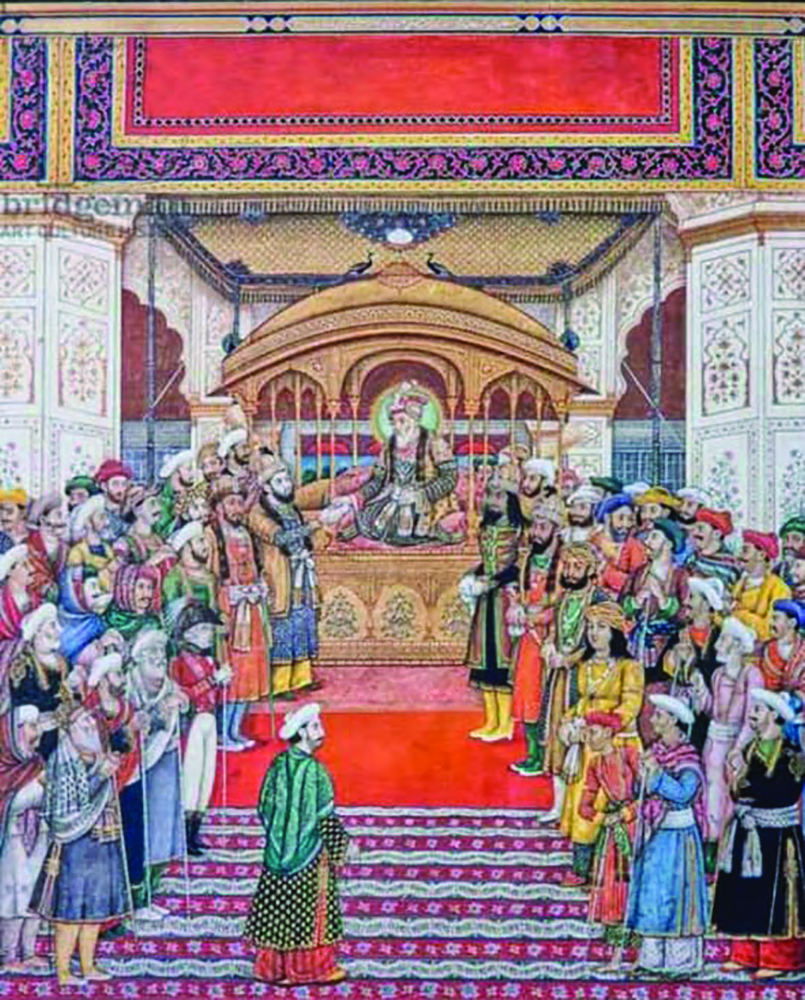
Fig. 1.6
Emperor Akbar hearing the grievances of the people in the Diwan-i-Khas.
Socio-Economic Status
European travellers and traders who visited India at that time recorded about the
society during the Mughal rule. A feudal social system existed at that time. Society
was divided into different stratas.
13
Medieval India
Page 14

The common man was at the bottom of society with the king at the top. Standard
of living of the people depended on wages and income. Most of the people were
farmers. Caste system existed among them. Each caste had its own customs and
rituals. Tavernier, a French traveller who visited India during the Mughal period,
recorded the social conditions and life style of the people at that time. There existed
wide differences in the way of life, food habits and clothing of people from place to
place. Babur, in his memoirs, recorded the labour system and caste system prevalent
in India during those days.
'Agra and Fatehpur Sikri were larger than the city of London and
was always bustling with people. The 12 mile distance between these
cities were filled with markets selling food and other items all along
the way.
Above is the description of two cities in India by Ralph Fitch, an Englishman who
visited India during the Mughal period. From this description, you can understand
the economic progress we had achieved during the Mughal rule. Agricultural
achievements were the basis for this economic progress. Rice, wheat, barley,
sugarcane, cotton and oilseeds were the major agricultural products of the time.
Abul Fazal in his book 'Ain-i-Akbari' recorded that Indians cultivated different
varieties of rice. The farmer was not evicted from the land as long as he paid tax.
The use of technology and new tools enriched the agricultural sector during the
Mughal period. The Persian wheel and canals were widely used for irrigation.
Abul Fazal
Abul Fazal was the most prominent historian during the Mughal era.
He was Akbar's advisor and biographer. He is the author of the books
'Ain-i -Akbari' and 'Akbar Nama'.
- Part 1
14
VII
Social Science
Page 15
Fig. 1.7
Persian wheel
Increased agricultural productivity accelerated trade and urbanisation. Gujarat was
the gateway of foreign goods. The main export items were textiles, muslin, sugar
and rice. Water transport made significant progress during this period. The major
cities of this period were Dhaka, Murshidabad, Surat, Lahore, Agra etc.
Find out the countries in which these Mughal cities are located now.
Mughal cities
Present countries
l Dhaka
l Bangladesh
l Murshidabad
l
l Lahore
l
l Surat
l
l Agra
l
15
Medieval India
Page 16
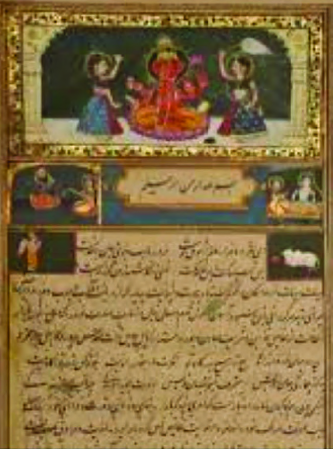
Cultural Integration
Fig. 1.8
Excerpt from the book Razm-Nama
Have you noticed the picture?
This is the front cover of the Mahabharata, translated into Persian during the Mughal
era. It was translated by Dara Shukoh, the son of the Mughal ruler Shah Jahan.
This is an example of the Mughal's blending with Indian culture. Such blending of
culture took place in many regions. Let us have a look at some examples of such
cultural integration.
- Part 1
16
VII
Social Science
Page 17
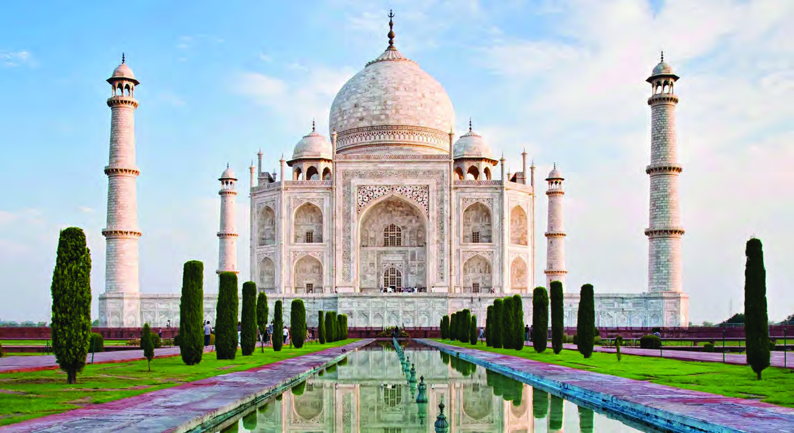
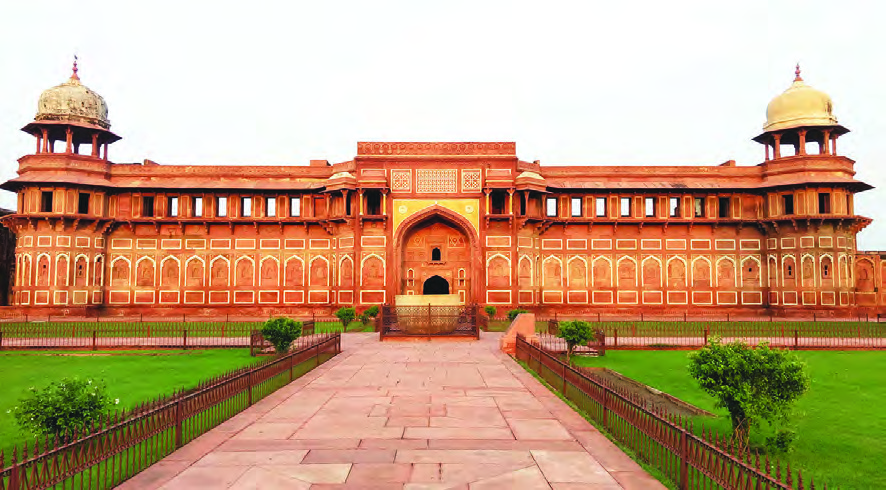
The Taj Mahal, Agra Fort and Red Fort are examples of the fusion of Indian
Architectural style with the Persian style brought here by the Mughals. Urdu,
a new language, was also formed by the fusion of Persian and Hindi languages
during this period. Hindustani music also originated as a result of this synthesis.
Fig. 1.9
Taj Mahal
Fig. 1.10
Agra fort
The Mughal Era witnessed similar types of integration in all walks of life.
17
Medieval India
ST-351-2-SOC. SCI. (E)-7-VOL-1
Page 18
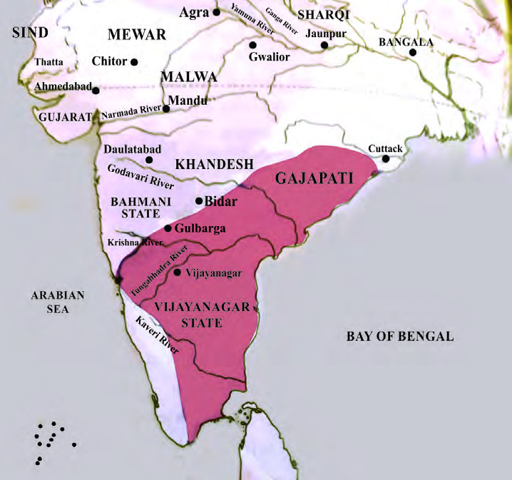
The Vijayanagara Rule
Hope, you have learned about the Mughal dynasty that ruled Delhi during the
medieval period? Different dynasties existed in South India also during this period.
The most prominent among them was the Vijayanagara Kingdom
Vijayanagara and Hampi
Vijayanagara (City of Victory) was the name of both a city and a kingdom.
The city was destroyed in 1565 CE and remained only in the minds of the
people. It remained in their popular memory as 'Hampi'. The ruins of Hampi
were discovered in 1800 by Colonel Mackenzie, an English East India
Company Officer. This discovery drew the attention of the researchers to the
history of Vijayanagara.
Fig. 1.11
Vijayanagara during the period of Krishna Deva Raya
- Part 1
18
VII
Social Science
Page 19

List out the present-day Indian states included in the city of Vijayanagara from the
above map.
l
l
l
Kings of Vijayanagara
l Sangama dynasty
l Harihara, Bukka
l Saluva dynasty
l Narasimha Saluva
l Tuluva dynasty
l Vira Narasimha
l Krishna Deva Raya
l Aravidu dynasty
l Tirumala
l Venkita I
The Vijayanagara was founded in 1336 CE by the brothers Harihara and Bukka.
Krishna Deva Raya (1509-1529) was the most famous ruler of the powerful and
wealthy kingdom of Vijayanagara. Let's note the words of the European traveller
Barbosa about him.
'The king allowed such freedom that anyone, irrespective of
being Christian, Jew, Moor or Heathen can come and go and live
according to his creed without being annoyed in any way. Equality
was ensured by the judicial system present there.
Barbosa
(Portuguese traveller who visited India)
The reign of Krishna Deva Raya was a period of imperial expansion and development
of the empire. Lot of construction works were carried out during his reign. Apart
from constructing more facilities in the capital city of Hampi, he also built new
forts, palaces and temples. Another important reason for his fame was religious
tolerance. All religions were treated equally by him. The people of different religions
were allowed to follow their beliefs freely. Art, literature, and cultural spheres also
witnessed remarkable progress under Krishna Deva Raya. He had extraordinary
19
Medieval India
Page 20


erudition and authored the works 'Amuktamalyada' and 'Jambavatikalyanam'. He
promoted Telugu, Kannada and Tamil literature. Scholars known as 'Ashtadiggajas'
adorned the court of Krishna Deva Raya.
Prepare a note by comparing the religious policies of Akbar and
Krishna Deva Raya.
Administrative System
Monarchy prevailed in Vijayanagara administrative system also. For administrative
convenience, the country was divided into mandalam (provinces), nadu (districts),
sthala (sub-districts) and grama (village). There was cabinet to help the king.
The King had the power to demote and punish ministers. There were courts at
various levels for the administration of justice. The appellate authority was the
King himself. Minor offences and labour disputes were dealt with by the village
courts themselves.
Nayakas and Amara-Nayakas played an important role in the administration of
Vijayanagara. The military commanders were known as 'Amara-Nayakas'. The
Kings allotted lands known as 'Amara' to them. The administration of Amara was
carried out by Amara-Nayakas. Amara-Nayakas had the right to collect taxes
from these areas. The Amara-Nayakas paid a fixed amount to the king. They also
maintained a certain number of foot soldiers (infantry), horses and elephants. This
system was called the 'Amara-Nayaka System'.
Compare and list the Mansabdari-Amaranayaka practices
Socio-Economic Condition
Vijayanagara society consisted of various castes and religions. Brahmins were the
dominant group in the society. They were entitled to the revenue from the land
allotted to the temples. Brahmins used to lead the rituals and religious ceremonies in
the temples. Other sections of the society were mainly engaged in agriculture, trade
and handicrafts. Kings employed women to prepare accounts of the royal palace
- Part 1
20
VII
Social Science
Page 21

and decorate gardens. Polygamy prevailed among the wealthy. Child marriage and
the practice of sati were also prevalent in society.
'...going forward, you have a broad and beautiful street...
In this street live many merchants, and there you'll find all sorts of
rubies and diamonds and emeralds and pearls and cloths...
that you may wish to buy... Then... a fair where they sell... horses
and oranges and grapes... and wood...'
- Domingo Paes
(Portuguese traveller who visited Vijayanagara)
Hope, you have read the travelogue given above.
Many travellers who visited that country recorded the grandeur and richness of
Vijayanagara. The main occupation of the people was agriculture. Silk and cotton
clothes were commonly used. Irrigation was provided in the arid areas around
Vijayanagara. The Kamalapuram lake, constructed in 15th century CE, Hiriyakanal
and the dam across the Tungabhadra river strengthened the agricultural sector.
The land was surveyed and taxed according to productivity. Apart from land tax,
the main sources of revenue to the government were professional tax, building tax,
license fees of various kinds and fines imposed by courts.
Vijayanagara developed into a major trading centre. Traders from different parts of
India and the world flocked to the famous city of Vijayanagara. The rulers greatly
encouraged foreign trade. The Portuguese and the Arabs had monopoly over
foreign trade. Trade was also done with China and Sri Lanka.
The trade of horses, brought from Arabia and Central Asia, was mainly done by
the Arabs. Horses were an important item of trade. Local traders involved in horse
trading were known as 'Kuthirachettis'. Gradually, the Portuguese pushed out the
Arabs and took control of this trade. Income from trade strengthened the nation's
economy. Chinese pottery found in the city indicates trade relations with China.
21
Medieval India
Page 22
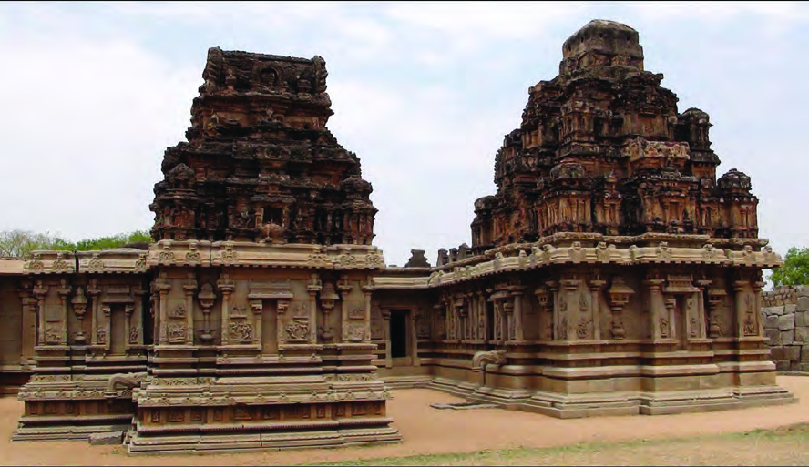
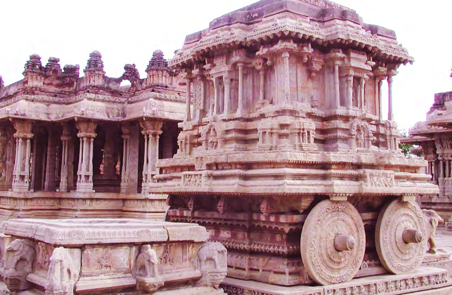
Cultural Life of Vijayanagara
Fig. 1.12
Hazara Ram Temple, Hampi
Fig. 1.13
Vitthala Swami Temple, Hampi
- Part 1
22
VII
Social Science
Page 23
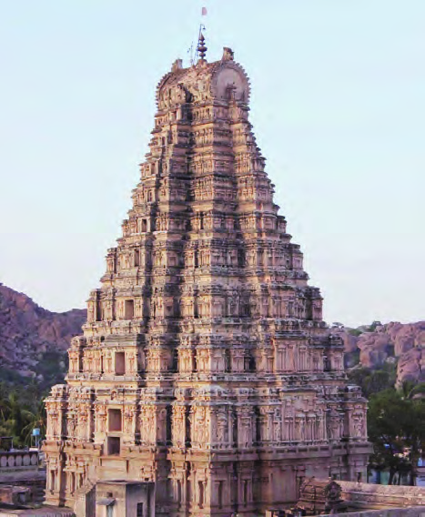
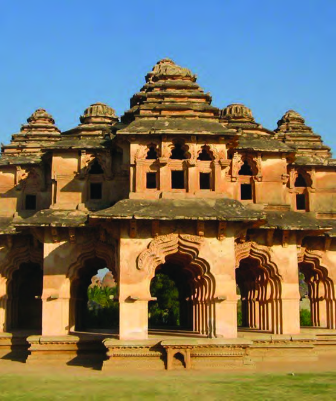
During the Vijayanagara period, the cultural life also made great progress. Many
schools were established for the study of Vedas and Sastras. The Vijayanagara
period, witnessed unprecedented growth in the fields of art, architecture, sculpture,
literature and music. Kings like Krishna Deva Raya were patrons of art and
literature. The 'Dravidian style of sculpture' was dominant during this period.
Another important feature of Vijayanagara style of sculpture was the gigantic
temple gates known as 'Gopurams'.
Fig. 1.14
Virupaksha Temple, Hampi
Fig. 1.15
Lotus Mahal, Hampi
The field of literature also made tremendous progress during this period. Telugu
literature was the most flourished one. Numerous Sanskrit works were also
translated into many regional languages during this period.
23
Medieval India
Page 24
Extended Activities
l
Create a digital album by collecting pictures related to the cultural contributions
of the Vijayanagara period and present it in the class.
l The achievements in various fields during the periods of Akbar and Krishna
Deva Raya were exemplary. Compare their contributions based on the given
clues and organise a seminar.
Indicators
l Governance
l Culture
l Wealth
l Justice
l Complete the table by comparing the common features of the Mughal and
Vijayanagara administrative systems.
Mughal Administration
Vijayanagara Administration
l Monarchy
l Monarchy
l
l
l
l
l
l
l
l
l Collect pictures and make a class presentation about the integration that took
place in various fields during the Mughal rule.
- Part 1
24
VII
Social Science